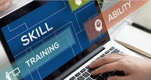
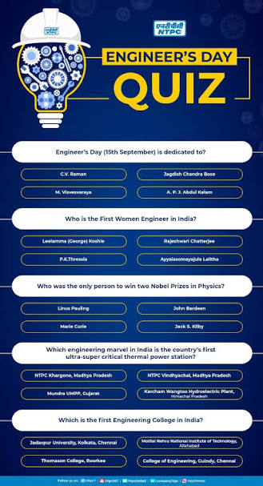

Empowering employees through continuous learning, technical excellence and healthy competition.
🚀 Start Quiz

The NSPCL Power-Up Quiz is an innovative digital learning initiative developed for employees of the SSC Contracts & Materials (C&M) function. The platform transforms technical learning into an engaging experience through interactive quizzes, instant feedback, leaderboards, performance analytics, and achievement certificates. Its objective is to encourage continuous professional development while strengthening knowledge of procurement, contracts, inventory management, supply chain and the power sector.
Comprehensive questions covering procurement, contracts, materials management, inventory control and power generation.
Fast-paced quiz experience with timer, instant feedback and score tracking.
Compete with colleagues, improve your ranking and earn recognition.
Track your learning journey, identify strengths and improve through detailed analytics.
Technical Questions
Knowledge Categories
Question Timer
Learning Anytime
Build a strong understanding of procurement, contracts, materials management, inventory control and supply chain practices.
Participate in technical quizzes, improve your ranking and earn recognition through continuous learning.
Monitor your performance through analytics, identify improvement areas and enhance technical skills.
Promote knowledge sharing and teamwork by learning together across the SSC C&M function.
Tendering, bidding, procurement policies, purchase procedures and vendor selection.
Contract administration, claims, risk management and compliance.
Inventory control, warehousing, codification and stock verification.
Vendor development, logistics, transportation and distribution.
Thermal power generation, plant operations and NSPCL business processes.
SAP, GeM, e-Procurement, digital workflows and automation.
Integrity, transparency, procurement guidelines and ethical practices.
Performance tracking, learning insights and continuous improvement.
✔ Enhance technical knowledge
✔ Prepare for departmental assessments
✔ Strengthen procurement and contract management skills
✔ Learn through interactive quizzes
✔ Track your progress and achievements
✔ Earn certificates and recognition